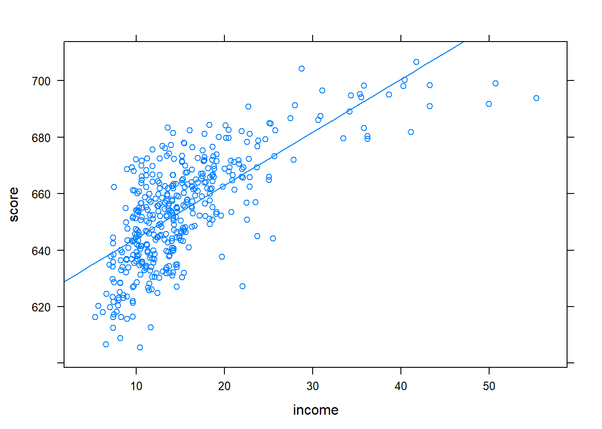
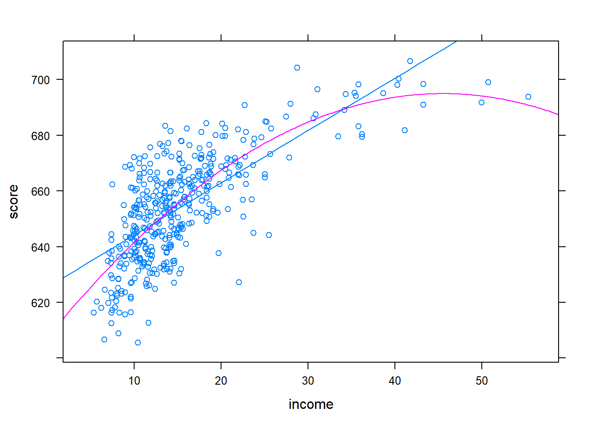
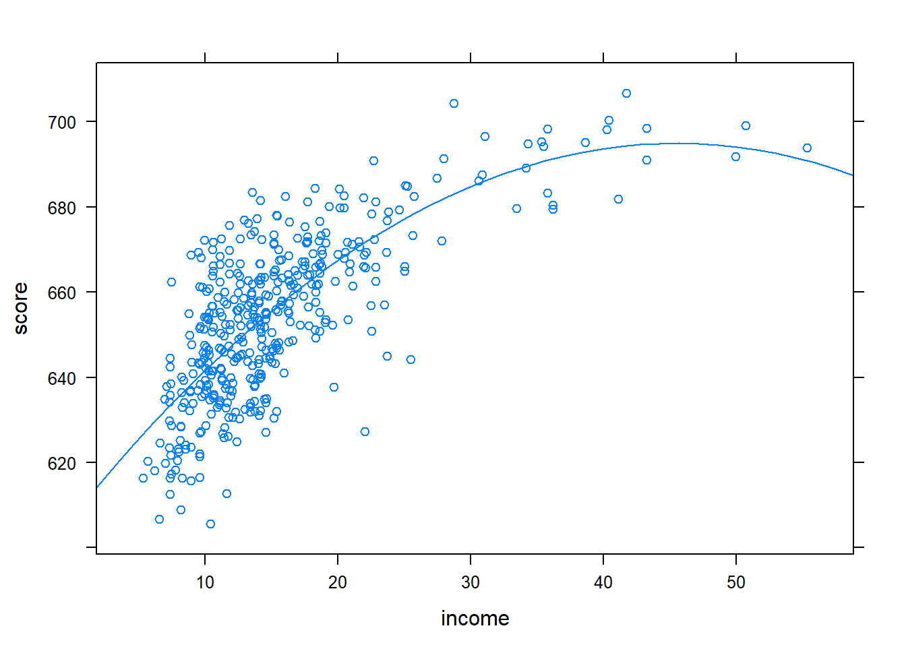
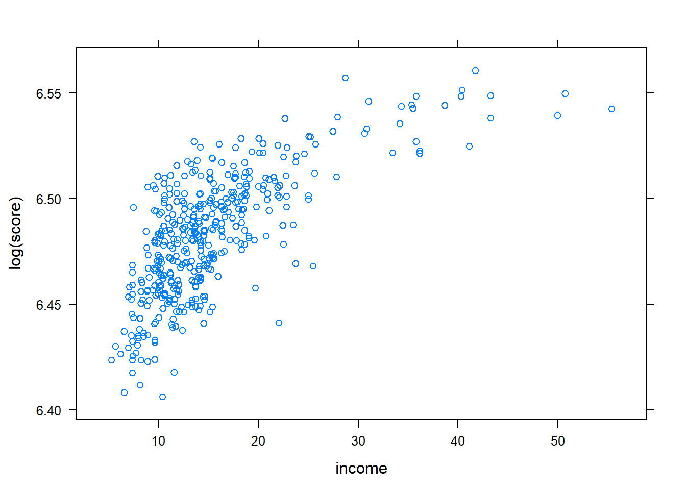
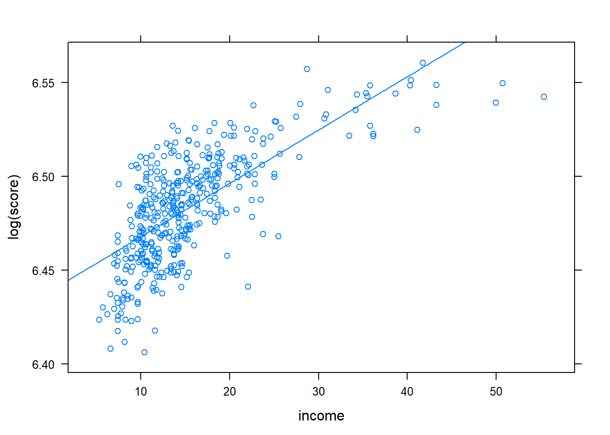
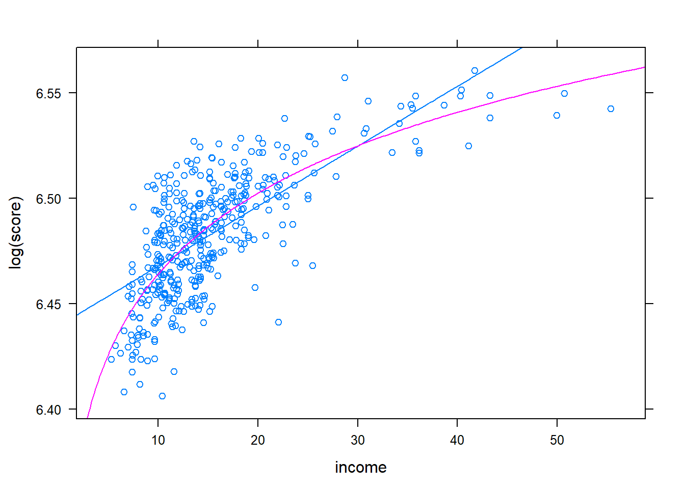
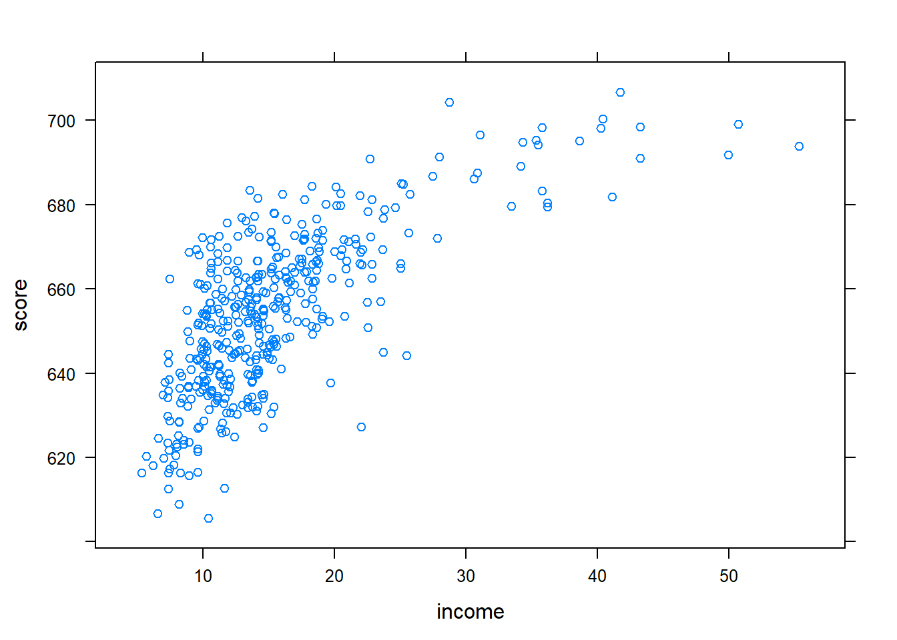
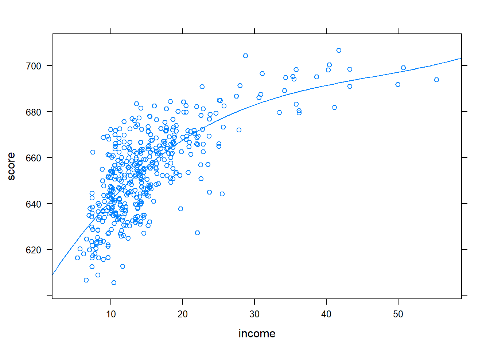

library
library(tidyverse)
library(knitr)
library(broom)
library(AER)
library(mosaic)データを少し加工する.
data("CASchools", package = "AER")
CASchools <- CASchools %>% mutate(score=(math + read)/2,
STR = students/teachers,
HiEL = I(english>=10))図8.2
lm(score ~ income, data = CASchools) %>% plotModel()
図8.3
fm2 <- lm(score ~ income + I(income^2), data = CASchools)
fn2 <- makeFun(fm2)
plotFun(fn2, add=T, col=2)## converting numerical color value into a color using lattice settings
plotModel(fm2)
図8.5
xyplot(score ~ income, data =CASchools)
fm_linear_log <- lm(score ~ log(income), data = CASchools)
fn_linear_log<- makeFun(fm_linear_log)
plotFun(fn_linear_log, add=T)plotModel(fm_linear_log)図8.6
xyplot(log(score) ~ income, data =CASchools)
fm_log_linear <- lm(log(score) ~ income, data = CASchools)
fn_log_linear <- makeFun(fm_log_linear)
plotFun(log(fn_log_linear(income))~income, add=T)
fm_log_log <- lm(log(score) ~ log(income), data = CASchools)
fn_log_log <- makeFun(fm_log_log)
plotFun(log(fn_log_log(income))~income, add=T, col=2)## converting numerical color value into a color using lattice settings
図8.7
xyplot(score ~ income, data =CASchools)
fm3 <- lm(score ~ income + I(income^2) + I(income^3), data=CASchools)
fn3 <- makeFun(fm3)
plotFun(fn3, add=T)
fm_linear_log <- lm(score ~ log(income), data = CASchools)
fn_linear_log <- makeFun(fm_linear_log)
plotFun(fn_linear_log, add=T, col=2)## converting numerical color value into a color using lattice settings